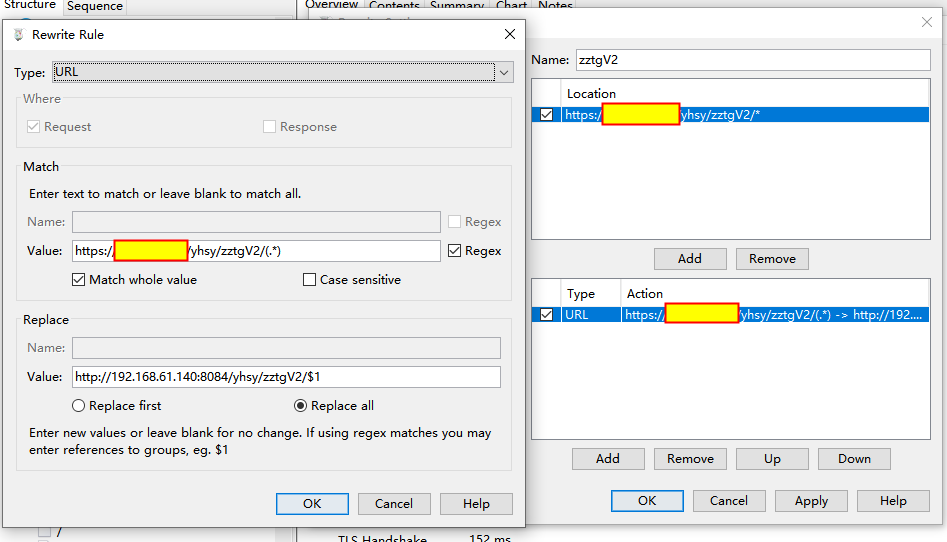

在日常开发调试过程中，比如线上出现了问题，需要进行调试，不可能一直发布代码至外网，这样效率很低。这时就可以通过Charles调试工具进行代理。
Charles调试工具中有map和rewrite功能，方便我们使用。
Map
map功能是将某个请求进行重定向，用重定向后的内容来响应请求的内容。例如可以对js、css进行重定向用于调试js和css实现效果，修改请求接口的host为测试环境等。
1.map Local：将指定网络请求重定向到本地的某个文件。
2.map Remote：将指定网络请求重定向到另外一个网络请求。
map的映射：
1.*：可以匹配0或者多个字符
2.?：可以匹配一个字符
Rewrite
rewrite功能主要可以针对某些匹配请求的header、host、url、path、query param、response status、body 进行rewrite，支持正则表达式的写法。
1.header：可以对请求或者响应的header内容进行操作，包括添加、修改及删除。比如在请求的时候需要添加对应的cookie等。
2.host：修改请求host，达到指定请求获取指定host环境的数据。
3.url：修改url中某些部分，既可以对host也可以对path进行rewrite。
4.query param：可以对param进行修改、添加、删除等操作。
5.response status：对response 的状态码进行rewrite。
6.body：对应请求的响应内容进行修改，一般对应一个或者几个值进行rewrite，用新值代替返回值等。
示例：
